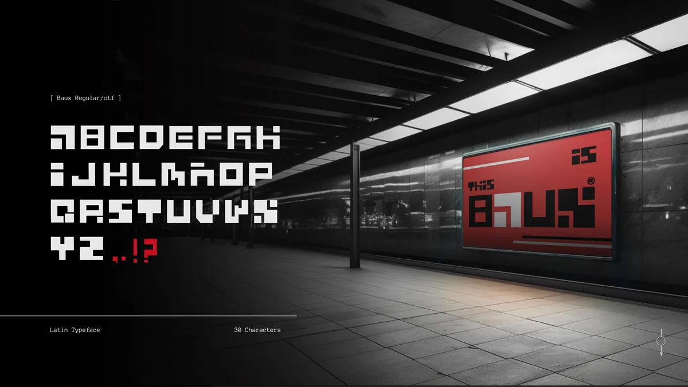
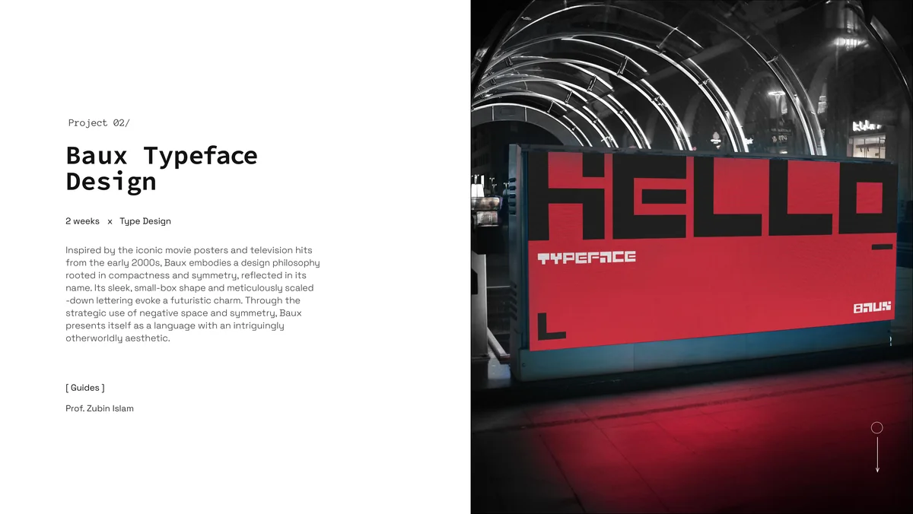
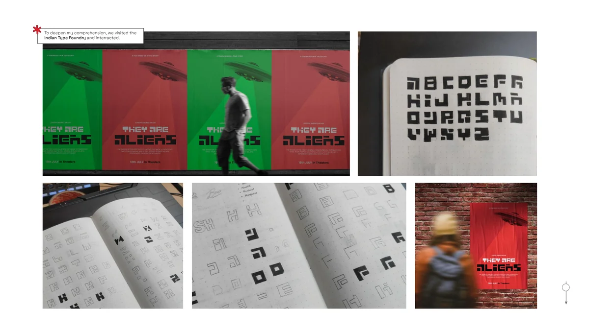
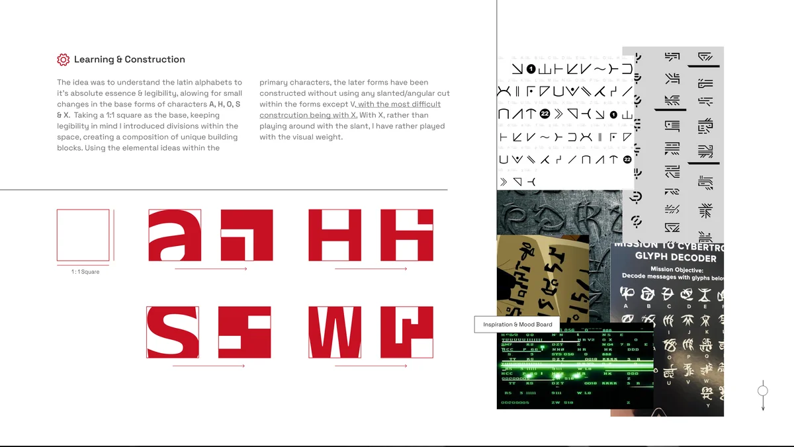
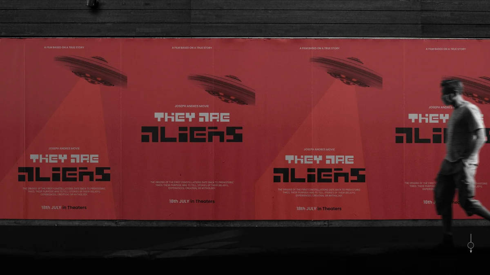

Inspired by iconic movie posters and television hits from the early 2000s, Baux embodies a design philosophy rooted in compactness and symmetry. Its sleek, small-box shape and meticulously scaled-down lettering evoke a futuristic charm. Through the strategic use of negative space and symmetry, Baux presents itself as a language with an intriguingly otherworldly aesthetic.
The aim was to create a typeface that could hold its own on a movie poster or a brand mark, something that looked like it arrived from somewhere else. Meticulously crafted for symmetry and uniformity, the characters are devoid of tangents or curves, evoking an almost alien and otherworldly appearance.

The construction logic started with a single constraint: a 1:1 square as the base unit for every character.
Divisions within the square created a composition of unique building blocks. Each character was assembled from these blocks, keeping legibility in mind despite the geometric rigidity. The primary characters were constructed without using any slanted or angular cuts, with one exception: V. X was the most difficult construction, requiring the most iterations to resolve within the grid while remaining readable.

The entire character set was drawn without curves or tangent points. Every edge is a straight line. Every corner is a right angle or a deliberate step. This constraint gave the typeface its distinctive alien quality, the letters look engineered rather than written.

Baux is suited for creating attention-grabbing headlines, logos, and prominent text elements in advertising, packaging, signage, branding, and web design. Its compact form and high contrast make it effective at large display sizes where its construction details are visible.


The final output was a complete Latin typeface of 30 characters: the full A-Z alphabet plus punctuation. Every glyph was drawn in Adobe Illustrator and finalized in Glyphs, ready for use as a display font.
"The font looks very interesting, with a very distinct look."Dr. D. Uday Kumar
"Its legibility is very interesting. It would be interesting to see its application first hand."Faculty Review
Visiting the Indian Type Foundry and interacting with the team during the project deepened my understanding of how professional type design balances creative expression with functional rigor. The constraints that made Baux distinctive, no curves, no tangents, strict grid, are the same kind of constraints that define how a professional foundry approaches a new face.
Shreyo Debnath · Designer